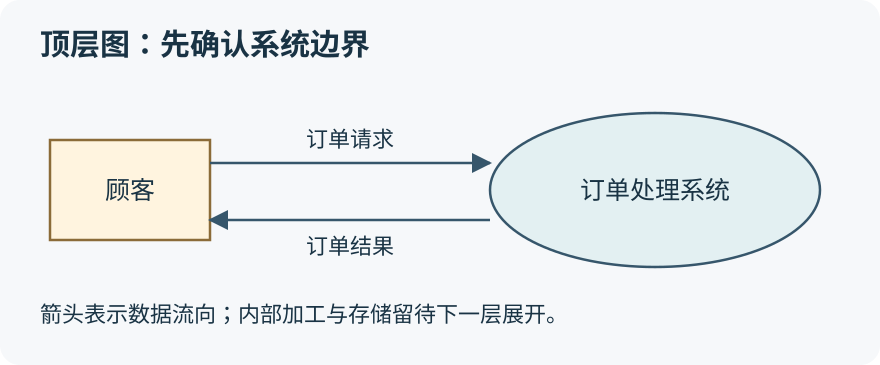
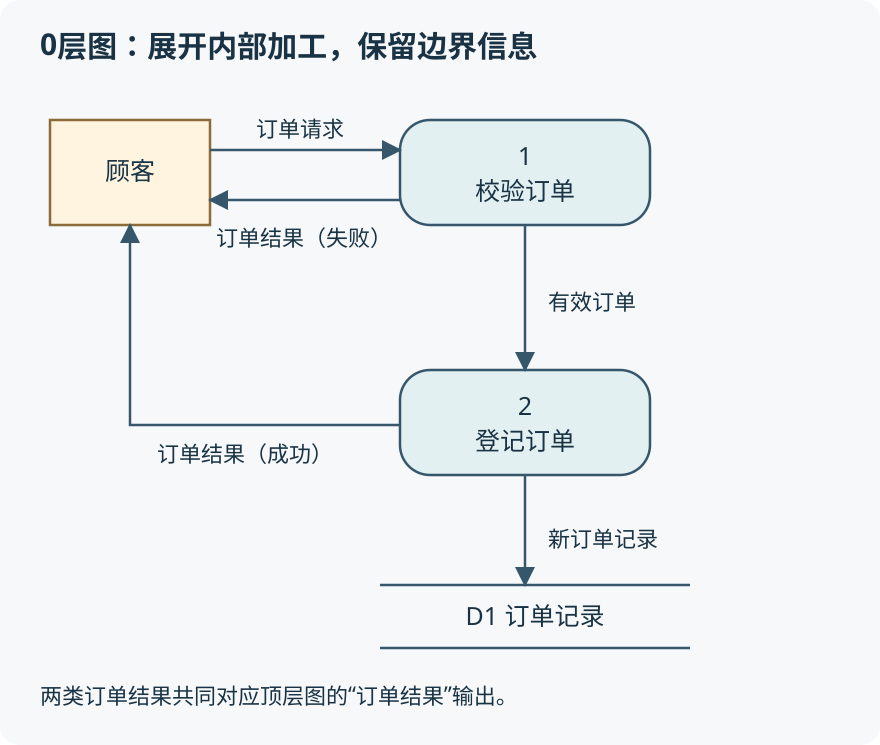

顾客提交订单，系统检查商品和金额，保存订单，再把结果返回给顾客。看起来只有一句话，里面却有好几种数据和处理。结构化开发就是把复杂系统有条理地拆开；数据流图则帮助我们看清“数据从哪里来、经过什么加工、到哪里去”。本文先用例子理解，再整理能直接用于复习的定义、分类与规则。
第一次看与复习时，可以这样读
- 初学：按顺序读，先理解“模块之间”和“模块内部”的区别，再学数据流图。
- 复习：重点看耦合与内聚分类表、数据字典符号表、DFD十条检查规则和文末自测。
- 画图题：重点掌握四种元素、箭头方向、分层编号、父子图平衡与加工输入输出。
一、结构化开发：先拆问题，再组织模块
结构化开发通常用自顶向下、逐步求精的方式认识系统：先把整个小程序看成一个系统，再分成商品、订单、支付等功能，必要时继续细分。不是一开始就陷进某条SQL或某个按钮的实现。
这里先分清分析和设计：分析要弄明白系统需要做什么，数据流图用于描述逻辑处理和数据关系；设计进一步决定怎样组织模块、接口和实现。DFD里的“加工”不必直接等于代码中的一个函数，也不意味着最终系统就必须按同一张图分成相同数量的服务。
1. 四个基本原则：定义和区别都要记
| 原则 | 需要记忆的含义 | 奶茶店例子 |
|---|---|---|
| 抽象 | 突出实体的本质方面，忽略暂时不重要或非本质的细节。 | 讨论下单时，先说输入订单、校验、返回结果，不先讨论数据库品牌。 |
| 模块化 | 把软件分成较小、较简单的模块，分别开发和测试，再组成完整程序。 | 将订单金额计算与支付通知处理分开，便于理解、测试和修改。 |
| 信息隐藏 | 将设计决策和内部实现封装在模块内，尽量减少向外暴露内部处理。 | 外部通过订单接口查状态，不直接依赖订单模块的内部表结构。 |
| 模块独立 | 每个模块完成相对独立的特定功能，与其他模块的联系保持简单。 | 优惠券规则改变，尽量只修改优惠计算模块。 |
抽象关注“突出什么”，信息隐藏关注“不向外暴露什么”。信息隐藏不是简单地让普通用户看不到数据，也不是加密的同义词；它首先是模块设计原则，目的是减少外部对内部实现的依赖。模块化也不是“函数越多越好”，拆分必须有清楚的职责和接口。
2. 模块独立的目标：高内聚、低耦合
耦合衡量模块之间联系的紧密程度；内聚衡量一个模块内部各元素联系的紧密程度。模块之间依赖越复杂，改一处越容易牵动其他地方；模块内部越围绕一个明确功能组织，越容易理解和修改。
耦合看“外部关系”，越低越好；内聚看“内部关系”，越高越好。记忆目标：高内聚、低耦合。
二、耦合的七种类型：重点看传了什么、共享了什么
这一集列出了非直接耦合、数据耦合、标记耦合、控制耦合、外部耦合、公共耦合、内容耦合。复习时不要只背名字，题目常通过一段模块交互描述，让你判断是哪一类。
| 类型 | 定义与识别关键词 | 例子 |
|---|---|---|
| 非直接耦合 | 模块之间没有直接关系，通过主模块的控制和调用联系。 | 订单统计和菜单展示互不调用，由主程序分别调用。 |
| 数据耦合 | 通过参数传递必要的简单数据。 | 金额计算模块接收商品单价和数量，返回金额。 |
| 标记耦合 | 通过参数传递记录或数据结构，常称特征耦合。 | 只需手机号，却传入包含地址、生日等信息的整个顾客记录。 |
| 控制耦合 | 传递的信息用于控制另一个模块的内部逻辑。 | 传一个模式标志，让同一模块在“退款”和“统计”之间选择。 |
| 外部耦合 | 按本课口径，模块共同访问同一全局简单变量，未通过参数传递；与共享结构化公共数据作区分。 | 多个模块直接读取全局的营业状态变量。 |
| 公共耦合 | 多个模块共同访问同一个公共数据环境。 | 订单模块和库存模块直接读写同一共享全局数据结构。 |
| 内容耦合 | 直接访问或修改另一个模块内部数据；跳入其内部；共享部分代码等。 | 支付模块绕过订单接口，直接改订单模块的内部变量。 |
常见教材中的耦合强度由弱到强：非直接 → 数据 → 标记 → 控制 → 外部 → 公共 → 内容。数据传递通常比共享状态更容易追踪，内容耦合则把模块边界直接打破，是应重点避免的强耦合。
三组易混点：传订单编号是数据耦合，传整个订单结构是标记耦合；传金额是业务数据，传“执行哪个处理”的标志体现控制耦合；通过参数交互与直接共享全局数据不同，后者需要继续区分外部或公共耦合。
视频例题中，A和B都访问相同的全局变量及数据结构，应选公共耦合。“结构化公共数据环境”是重要线索。不要看到“传一个整数”就立刻认定数据耦合：这个整数若控制被调用模块走哪条逻辑，仍可能是控制耦合。
三、内聚的七种类型：这个模块为什么把这些事放一起
判断内聚时，把注意力从“模块怎么互相调用”转回“一个模块内部为什么包含这些工作”。相同的编程语言、作者或文件位置，并不能说明它们具有高内聚。
| 类型 | 定义与识别关键词 | 例子 |
|---|---|---|
| 偶然内聚／巧合内聚 | 任务没有实际联系，只是碰巧放在一起。 | 同一模块混放字体设置、退款计算和日志清理。 |
| 逻辑内聚 | 逻辑上同一类任务聚在一起，通常由控制参数选择执行哪一项。 | 把读文件、读键盘、读网络等输入操作放在同一模块，通过标志选择。 |
| 瞬时内聚／时间内聚 | 任务需要在同一时间段执行。 | 启动时同时初始化日志、读取配置和建立连接。 |
| 过程内聚 | 任务需要按某个规定次序执行，但不一定共享同一数据或构成输入输出链。 | 退出流程依次关闭界面、清理临时目录和断开连接。 |
| 通信内聚 | 各任务围绕同一数据结构，使用相同输入或产生相关输出。 | 读取同一订单记录，生成屏幕展示内容和打印摘要。 |
| 顺序内聚 | 前一部分的输出成为后一部分的输入。 | 先把原始订单解析为标准记录，再用标准记录计算金额。 |
| 功能内聚 | 所有部分协同完成一个单一功能，缺一不可。 | 金额计算模块的各步骤都服务于正确算出应付金额。 |
常见内聚程度由低到高：偶然 → 逻辑 → 瞬时 → 过程 → 通信 → 顺序 → 功能。口诀可记“偶、逻、时、过、通、顺、功”；真正做题时还是要抓住联系的原因。
过程和顺序的区别：过程强调规定的执行次序，顺序还要求有数据上的前后承接。通信和顺序的区别：通信强调大家围绕同一份数据，顺序强调前一步输出交给后一步。功能内聚强调一个明确功能，而不是“把任何看起来相关的任务都塞进去”。
四、系统总体结构：模块不只是一个名字
课件将模块定义为组成系统的基本单位，它可以组合、分解和更换。根据功能具体化程度不同，可区分逻辑模块与物理模块：前者偏向逻辑功能，后者偏向具体实现。
1. 模块的四个要素
- 输入和输出：从调用者取得输入，加工后将结果返回。例：输入单价和数量，输出金额。
- 处理功能：将输入转换为输出所完成的工作。例：按数量计算商品金额。
- 内部数据：只供模块自身使用的数据。例：计算时的局部中间值。
- 程序代码：实现模块功能的程序。
这是本课传统模块设计的讲法。不要据此推断所有现实模块都只能有一个调用者，也不要认为内部数据必须以全局变量形式实现。
2. 总体结构设计的记忆清单
- 分解—协调：先分工，再保证各部分能够协同。
- 自顶向下：先总体，再逐层细化。
- 信息隐藏与抽象：明确接口，减少内部细节泄露。
- 一致性：结构、接口和表达方式保持协调一致。
- 明确性：职责和接口含义清楚，不含糊。
- 低耦合、高内聚：模块外部联系简单，内部围绕明确功能。
- 扇入、扇出合理：调用关系不能过度集中或随意扩散。
- 模块规模适当：避免大而杂，也避免为了拆分而拆分。
扇入是直接调用该模块的模块数量；扇出是该模块直接调用的其他模块数量。三个业务模块都调用金额计算模块，它的扇入是3；某主模块直接调用订单、支付、库存三个模块，它的扇出是3。适当的扇入可以体现复用，过高的扇出会增加协调复杂度，不能只按“越大越好”或“越小越好”背。
五、数据流图：画的是数据的逻辑流动
数据流图也叫数据流程图，英文Data Flow Diagram，简称DFD。它是便于用户理解和分析系统数据流程的图形工具，摆脱具体物理实现，描述系统的功能、输入、输出与数据存储，是系统逻辑模型的重要组成部分。
“顾客把订单提交给系统，系统保存订单并返回结果”，可以画成下面的顶层图。这里只展示系统与外部的交互，内部的数据库和处理步骤尚未展开。

DFD不负责表达“先点按钮，再执行if，再循环三次”。那是控制流程。箭头要写“订单请求”“校验结果”等数据名称，而不是仅写“下一步”“开始执行”。
四种基本元素：名称、图形和含义
| 元素 | 常见画法 | 含义及命名 |
|---|---|---|
| 数据流 | 带名字的有向箭头 | 一组固定成分的数据，箭头表示流向，名称反映数据含义，如“订单请求”。 |
| 加工 | 圆、椭圆或圆角矩形 | 将输入数据转换为输出数据，宜用动宾短语，如“校验订单”。 |
| 数据存储／文件 | 两条平行线或开口矩形 | 保存数据的逻辑位置，如“订单记录”。流入表示写入，流出表示读取。 |
| 外部实体 | 矩形 | 系统之外的人员、组织或其他系统，如“顾客”“支付平台”。 |
图形会随采用的记法变化，考试先看题目约定。数据存储不是一定要实现成磁盘文件，也可以对应数据库中的逻辑数据；外部实体也不一定是人。某支付平台是否外部，取决于我们正在分析的系统边界。
六、数据字典：把箭头和文件里的内容解释清楚
图上标了“订单请求”，却没说请求包含哪些字段，仍然不够。数据字典就是对数据流图中的数据流、数据存储、加工及组成数据的数据项作出说明的配套文档。DFD给全景，字典补细节。
本课的四类条目：数据流条目、数据存储条目、加工条目、数据项条目。加工条目说明处理规则；数据项条目说明最基本字段的类型、范围等。不要把数据字典只理解成数据库字段表。
| 符号 | 含义 | 例子 |
|---|---|---|
| = | 被定义为 | 订单请求 = 顾客编号 + 商品明细 +（备注） |
| + | 与；由这些成分共同组成 | 商品明细 = 商品编号 + 数量 |
| [a | b] 或 [a, b] | 或；从列出的选项中选择 | 取餐方式 = [自取 | 配送] |
| {a} | 重复；a可以重复出现，具体次数可另加约束 | 商品列表 = {商品明细} |
| (a) | 可选；a可以出现，也可以不出现 | 订单请求中的备注可以省略。 |
符号口诀：“等号定义，加号组成，方括号选择，花括号重复，圆括号可选”。这里的加号不是数值相加，花括号也不是程序语言中的代码块。虽然本课用重复解释为零个或多个，若业务要求至少一种商品，字典就应额外规定商品明细数量≥1；不要只靠通用符号猜业务约束。
七、分层与编号：放大一个加工，不是换一套系统
一张图塞进所有细节会很难读，因此要分层。按本集记法，顶层图把整个系统画成一个加工；0层图展开为主要加工；再选其中一个加工继续分解，形成下一层子图。

注意图中的“订单结果”分为两条输出，分别表示失败结果和成功结果。它们在数据字典中可定义为选择关系：订单结果 = [订单成功信息 | 订单失败信息]。这是一种按数据内容合并解释边界流的做法，并不是要求两条线在图上接成一个物理管道。
父图、子图与编号
如果父图里的加工1被另一张图展开，后者就是这个加工的子图；子图内的加工可编号1.1、1.2、1.3。若继续展开1.2，可编号1.2.1、1.2.2。编号说明分解关系，不表示执行顺序。
- 顶层图只有一个加工，按本课约定可以不编号。
- 0层主要加工可编号1、2、3等；有些教材使用0.1、0.2等，按题目约定保持一致。
- 子图的图号对应父图中被分解的加工号；内部加工号由图号、圆点和序号组成。
- 父图有n个加工，不要求全部分解，因此可以有0至n张直接子图；每张子图对应一个被展开的加工。
八、画图必记：十条规则及其原因
- 命名要有实际含义。数据流、加工、存储和外部实体都应适当命名，避免只有“数据”“处理”等空泛词。可用“订单请求”“校验订单”“订单记录”。
- 画数据流，不画控制流。表达传递的内容，不用DFD代替程序流程图。
- 每条数据流至少有一端连接加工。不能直接画外部实体→存储、存储→存储或外部实体→外部实体；系统内的读取、写入或转换必须有加工参与。
- 按本课规范，同一加工的输入、输出数据流不应同名。即使字段组成相同，也应区分语义，例如“原始订单”和“已校验订单”，使处理的含义清楚。
- 允许多个数据流连接同一对加工，也允许一份输出送往不同加工。不同内容分别命名；相同输出的复制可以使用相同名称。
- 父图和子图的边界必须平衡。展开后不能无依据地增加或丢掉输入、输出；复合流可以拆分，但合起来的数据内容必须对应。
- 仅供一个加工内部使用的存储，可作为内部文件不在这一层画出。本课强调首次出现且只与一个加工有关的存储，应放在该加工内部理解；之后需要多加工共享时再明确展示。
- 加工必须遵守数据守恒。输出内容应能由输入获得或加工产生，不能凭空冒出没有来源的信息。
- 每个加工必须既有输入，又有输出。只有输入的“黑洞”和只有输出的“奇迹”都是检查重点；有输入输出却输入不足以支持输出，也有问题。
- 整套图中的每个存储应有读、写数据流。局部某张子图可以只显示读或只显示写；不能因此断定整套系统没有另一方向。流入存储是写，流出存储是读。
第7和第10条是在本课建模范围内的表达规范。真实系统若读取外部只读数据，应结合系统边界、题目说明和建模约定处理，不能为了机械凑出写入箭头而编造业务。
数据守恒不等于数值或字节数相等
输入单价和数量，输出金额，金额虽然不是原输入的字段，也可以通过计算产生，符合守恒；只输入顾客编号却输出配送地址，且没有读取顾客记录的流，就缺少数据来源。检查的是信息来源是否充分，不是输入输出长度必须相同。
九、父子图平衡：画图题的核心检查
把父图中的加工想成一个盒子。展开子图就是把盒子打开，内部可以多出加工和存储，但盒子的外部接口不能随便变。若父图有“订单请求”输入、“订单结果”输出，子图必须完整保留这两类边界信息。
平衡不是机械数箭头。例如父图的“顾客信息”定义为顾客编号＋手机号，子图分别引入这两个字段，内容完整对应时仍可平衡。若子图额外从外部接收“会员等级”，父图和数据字典却都没说明这个输入，就不平衡；内部读取既有会员存储又是另一个需要按实际模型判断的情况。
找缺失数据流，可以按五步做
- 确认边界与图层。找出外部实体、被展开的父加工及存储，不把内部加工误认成外部实体。
- 列父加工的输入和输出。记下方向、名称以及数据字典中的组成。
- 与子图边界核对。分别检查输入和输出，有没有遗漏、无依据新增或拆分不完整。
- 查子图内部的数据来源。每个加工是否既有输入又有输出，生成结果所需数据是否足够，读写方向是否正确。
- 补出有业务依据的流。指出起点、终点和名称；最后再核对两层平衡，不靠“看着空”乱添箭头。
视频末尾正是围绕父子图平衡和子图内平衡查缺失流。补线的依据应是题干、已有边界和数据说明；如果需要读取权限记录才能完成权限验证，那么缺少“权限记录→权限验证”的读取流就值得检查，但不能因此给每个加工都随意连上所有存储。
十、用六道自测题检查是否真正记住
建议先回答，再展开答案。下面的题是本文补充练习，覆盖本集主要判断方法。
1. 模块A和B直接读写同一个共享全局记录，属于哪种耦合？
公共耦合。线索是共同访问公共数据环境。若只是通过参数传递记录，则重点是标记耦合；两者不能混淆。
2. 一个模块先解析订单，再把解析结果交给金额计算，体现哪种内聚关系？
这两个部分之间体现顺序内聚：前一步输出成为后一步输入。若整段描述进一步明确所有部分只为一个单一功能且缺一不可，还需要按题目关注的模块整体职责判断，不能只凭出现“先、再”认定。
3. 字典写“订单请求 = 顾客编号 + {商品明细} + (备注)”，三个符号是什么意思？
＋表示共同组成，花括号表示重复，圆括号表示可选。订单有顾客编号和商品明细列表，备注可省略；至少一个商品的业务限制需要另外说明。
4. 可以直接画“顾客→订单记录”吗？
不能。应有接收、校验或保存订单的加工参与，例如顾客→登记订单→订单记录。每条数据流至少一端连接加工。
5. 父图输入为“用户信息”，子图拆为“编号”和“手机号”，一定不平衡吗？
不一定。先查用户信息的定义；若恰好由编号和手机号组成且方向一致，完整拆分可保持平衡。若还包含其他字段却遗漏，就需要修正。
6. 加工只输入订单编号，却输出顾客配送地址，图里没有其他输入，问题在哪里？
数据来源不足。应根据需求补上读取订单或顾客资料的输入流；编号本身不能凭空产生地址。只有输入输出两根箭头，还不足以证明加工合理。
十一、考前速记清单
- 设计四原则：抽象、模块化、信息隐藏、模块独立；目标高内聚、低耦合。
- 耦合由弱到强：非直接、数据、标记、控制、外部、公共、内容。
- 内聚由低到高：偶然、逻辑、瞬时、过程、通信、顺序、功能。
- 模块四要素：输入输出、处理功能、内部数据、程序代码。
- DFD四元素：数据流、加工、数据存储、外部实体。
- 字典四条目：数据流、数据存储、加工、数据项；五符号记定义、组成、选择、重复、可选。
- 层次：按本课为顶层→0层→进一步子图；编号表示分解，不表示顺序。
- 补图三重点：父子边界平衡、加工输入输出合理、数据来源充分。
先定边界，再看数据；加工要转换，存储分读写；分层接口不丢失，输出来源讲得通。
如果只能背下一个判断方法，就记住：读任何一条箭头时，都问“这是什么数据、从哪里来、送到哪里、为什么需要它”。能回答这些问题，才是在理解数据流图，而不是只认图形。